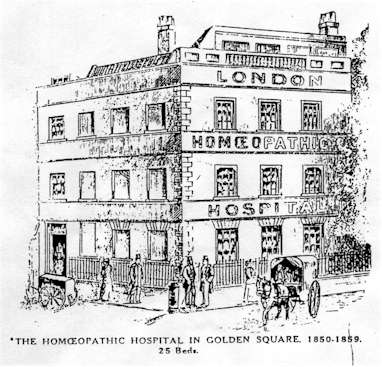
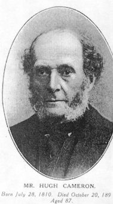
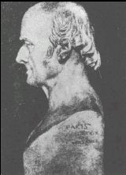
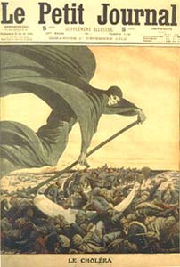
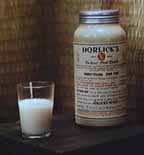
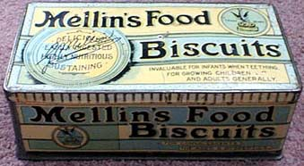

CHOLERA, DIARRHŒA AND DYSENTERY :
HOMŒOPATHIC PREVENTION AND CURE.
by John Henry Clarke, M. D.
Presented by Médi-TCholera, Diarrhœa and Dysentery.
Part I. - Asiatic Cholera.Chapter I. - What is cholera ?
Hahnemann and microbes.It will surprise some modern scientists to be told that the microbic theories which they now advance to explain any and every disease are by no means of recent date, and that Hahnemann was before them all in claiming for microbes the chief share in the causation of cholera.
In a pamphlet published in Leipzic in 1831 [See Lesser Writings, translated by Dudgeon, p. 489] he vigorously attacked Hufeland, who advocated the atmospheric and telluric theory. In the following passage he anticipates modern views of immunity as well as of infection.
"On board ships - in whose confined spaces, filled with mouldy, watery vapours, the cholera miasm finds a favourable element for its multiplication, and grows into an enormously increased brood of those excessively minute, invisible, living creatures so inimical to human life, of which the contagious matter of the cholera most probably consists - on board these ships, I say, this concentrated aggravated miasm kills several of the crew ; the others, however, being frequently exposed to the danger of infection and thus gradually habituated to it, at length become fortified against it and no longer liable to be infected. These individuals, apparently in good health, go ashore, and are received by the inhabitants without hesitation into their cottages, and ere they have time to give an account of those who have died of the pestilence on board the ship, those who have approached nearest to them are suddenly carried off by the cholera. The cause of this is undoubtedly the invisible cloud that hovers closely around the sailors who have remained free from the disease, and which is composed of probably millions of these miasmatic animated beings, which at first developed on the broad marshy banks of the tepid Ganges, always searching out in preference the human being to his destruction [He means, I suppose, having little or no effect on animals - J. H. C.], "and attaching themselves closely to him, when transferred to distant and colder regions become habituated to these also, without any diminution of their unhappy fertility or of their fatal destructiveness."
With all our microscopes and experiments on living animals (which possess a natural immunity against cholera, and are thus peculiarly unfitted for the study of this disease) we have got little further than this. That there is an infective principle there is no doubt, and that it is of an infinitesimal organised nature need not be disputed. Whether it is a comma-shaped bacillus or a straight bacillus, or a variety of bacilli, may safely be left to the microbiologists to fight over.
The thing of vital importance to know is, the conditions under which the infection may be guarded against, and how the disease may be cured when once the infection has "taken." Happily each of these points is pretty fully understood.
Habits of Cholera Infection.
Though Hahnemann was doubtless right in attributing cholera to a specific infection, he was perhaps unnecessarily severe on the upholders of the "atmospheric-telluric" theory. In all epidemics there are a number of factors at work ; and it is in proportion as the accessory conditions are favourable that the infection spreads. It would be bold to deny that atmospheric and electric conditions have nothing to do with it. Though no quarantine may be observed, one town will escape whilst another is smitten, and that though both may be fed by the same water-supply. In India, where the disease is endemic, an outbreak in troops may be suddenly determined by the occurrence of a thunderstorm. Or the disease may-take one side of a street and spare the other, the fortunate side being the side exposed to the sun. In the outbreak at an asylum of Halle in Germany, the inmates of one wing only were affected, that wing having been built over the site of an old pond. Professor von Pettenkofer's experiments on himself at Munich go to show the same thing. He swallowed an enormous number of bacilli, but remained free from cholera ; his contention being that the condition of locality was one of the determining factors, and that in Munich, which had remained free from the disease, although in frequent communication with Hamburg, this condition was wanting.
For my part, I should define cholera as a specific fever, due to epidemic influences not well understood, and more allied to intermittent than to the eruptive fevers ; the chill stage of the fever being so intense that it overshadows all its other features.
The external chill being accompanied by internal congestion, which generally finds relief in copious evacuation by the stomach in vomiting, and by the bowels in diarrhœa.

Chapter II. - The Superiority of Homœopathic Treatment in Cholera - An Allopathic Doctor's Testimony - Homœopathy in the Hamburg Epidemic.
 But there is no need to wait until the nature of cholera is thoroughly understood before undertaking to cure it. If there is one thing certain in this world, it is that thousands of lives have saved by homœopathic treatment in cholera epidemics that would infallibly have been lost under allopathy. It is a matter of the first importance to public safety that this fact should be made thoroughly well known wherever cholera may reach. The fact is attested not by homœopathists merely from their experience in every epidemic in which it has been put to the test, but by allopaths themselves who have watched the treatment and its results, many having been converted to homœopathy in consequence of the cures they have witnessed. Here is an extract from a letter written by Dr Macloughlin, the Medical Inspector of Stepney, Poplar, St Andrews, St Giles, and St George's, Bloomsbury, who undertook to watch the practice at the London Homœopathic Hospital during the epidemic of 1854. The letter was addressed to Mr Hugh Cameron, one of the surgeons to the Hospital at that time. Dr Macloughlin said :-
"You are aware that I went into your hospital prepossessed against the homœopathic system ; that you had in me, in your camp, an enemy rather than a friend, and that I must therefore have seen some congent reason there, the first day I went, to come away so favourably disposed as to advise a friend to send a subscription to your charitable fund. And I need not tell you that I have taken some pains to make myself acquainted with the rise, progress, and medical treatment of cholera, and that I claim for myself some right to be able to recognise the disease, and to know something of what the treatment ought to be ; and that there may be therefore no misapprehension about the cases I saw in your hospital, I will add that all I saw were true cases of cholera in the various stages of disease ; and that I saw several cases which did well under your treatment, which I have no hesitation in saying would have sunk under any other.
"In conclusion, I must repeat to you what I have told every one with whom I have conversed, that, although an allopath by education, principle, and practice, yet, were it the will of providence to afflict me with cholera, and to deprive me of the power of prescribing for myself, I would rather be in the hands of a homœopathic than an allopathic adviser." - (British Journal of Homœopathy, vol. xiii. P. 681).
The efficacy of homœopathic treatment in cholera needs no stronger testimony than this. If more were needed, the experience of the Hamburg epidemic of last year would supply all that was lacking.
It was a matter of surprise to many homœopaths that during the height of the cholera epidemic at Hamburg last summer nothing was heard of the treatment of the disease by the method of Hahnemann. It was felt that some of the representatives of our Art on the spot must have been busily engaged to the public advantage ; and it now turns out that such was indeed the case, but the work was done so quietly and unostentatiously that the caterers for the public press passed it by in their eagerness to give full details of the gruesome horrors of the cholera hospitals.
Dr Hesse, of Hamburg, has communicated his experiences to the Allgemeine Homœopatische Zeitung, a translation of which, by Dr Lambrights fils, of Antwerp, appears in the February number of the Revue Homœopathique Belge.
Dr Hesse is of opinion that the greater part of the population of Hamburg were more or less affected by the epidemic, the larger number only in a slight degree. At any rate, morning diarrhœa was a very common occurrence, and this was controlled by Sulphur. Fear of cholera was also very common, reminding us of the old story of the plague and the philosopher at Damascus. As the plague was entering the city he met a philosopher, and informed him that he had 3000 victims to carry off. As it happened, 6000 died, whereupon the sage expostulated with the demon of the epidemic : "You said you had only three thousand victims, and you have taken six." "Oh ! no," was the reply, "I only killed 3000 ; fear killed the rest." Perhaps if he had wished to be quite exact he might have credited a few of the victims to the Damascus doctors.
There is not the slightest doubt that fear is a potent factor in the causation of disease. It is the most depressing of all emotions, and greatly lessens the resisting-power of the organism. In the Hamburg cases Dr Hesse found Arsenicum a specific when the fear of cholera was the leading element in the case. Arsenic was also the most useful medicine in the cases reported by Mr A. Paasch, a lay homœopathists who, in the dearth of medical aid, volunteered his services, which were accepted by the authorities, who assigned him a district. Excluding the lightest cases, his death-rate only amounted to 5 percent. An account of his work is published in the Leipziger Populäre Zeitschrift für Homœopathie, and a translation in the Hahnemann Monthly and the Homœopathic Envoy for March last.
Chapter III. - Protection from Cholera by Homœopathy.
Copper belts ; Sulphur ; Camphor.
RECENT observations by Professor Charcot, of Paris, and earlier ones by Dr Burq, have proved the correctness of Hahnemann's observations with respect to the medicinal powers of metallic substances in their insoluble, uncombined state. The mere application of gold, silver, copper, and other metals to the skin in sensitive subjects will produce powerful and characteristic effects ; and all persons, whether sensitive or not, who wear these metals next the skin will be brought more or less under the influence of them, although no symptoms may be produced.
In the last volume of the Homœopathic World [Homœopathic World, December 1892, p. 526.] I published an extract from one of the medical journals in which a practitioner related a case of copper poisoning which was almost indistinguishable from a case of Asiatic cholera. This property of copper to produce symptoms exceedingly like those of cholera renders it one of the most valuable medicines in the treatment of the disease. But, more than that, it has also proved the very best preventive.
In some of the epidemics it had been noticed, and especially by Burq ["At the Paris International Congress of Hygiene in 1878, Dr Burq referred to his researches, twenty-five years previously, which proved to him the immunity from cholera possessed by workers in copper, and said that where the question had been investigated by other observers, the same result had been arrived at. He also traced the preservation of Aubagne, between Toulon and Marseille, through every epidemic of cholera, to the fact that the large quantity of copper employed in the potteries surrounding the city produced, as it were, a rampart of copper-laden dust."- Homœopathic League Tract, 42.], that workers in copper foundries were exempt from the disease, whilst all around them were being attacked.
It was this circumstance which led to the practice of wearing copper plates next the skin, a practice first adopted in Hungary, according to Hahnemann. The custom of wearing rings of copper on the toes followed by some of the natives of India may have some (conscious or unconscious) connection with its power of affording protection against this disease.
Europeans in India wear round the waist a double band of flannel, which they call a cholera belt ; and doubtless the magnetic properties of flannel may increase the bodily resisting power. But these belts have been improved upon, and the protection rendered much more certain by the addition to the flannel of a plate copper, two to four inches in diameter. Such belts are to be procured of all homœopathic chemists ; or they may be improvised by procuring pieces of thin copper plate, cutting in them slits at opposite borders, to which straps or tapes may be attached, which may be passed and fastened round the body. The cholera belt should be worn night and day. It may be cleansed from time to time by rubbing with a little vinegar. If copper in this form is objected to, the homœopathic preparation of Cuprum aceticum 3 may be taken internally, one drop or two pilules three times a day.
As matters of general precaution it will be well to have drinking-water cisterns and filters cleansed periodically. Saluteris water and other table-waters of repute, natural and manufactured, should be used when there is any doubt about the ordinary service water. Care must be taken to avoid all excesses in eating and drinking, and especially eating fruit that is not perfectly sound and good. Clothing should be sufficient and warm. Especial caution should be observed in leaving off garments in warm weather, and in avoiding getting the feet wet. Those who take these precautions and provide themselves with the protection of copper need have no fear of cholera, however badly it may be about.
During the epidemic at Hamburg, Dr Hesse advised the use of Sulphur as a prophylactic. He recommended his patients to dust sulphur inside their stockings every morning when they put them on. In that particular epidemic sulphur corresponded to the symptoms of many of the cases, and would thus be specially appropriate ; but in a general way copper is much to be preferred to all other prophylactics.
Treatment of the premonitory symptoms.
Camphor belongs more to the treatment of the disease than to the prophylactic stage ; but nevertheless it has place in both. Though the symptoms of cholera come on with fearful suddenness, there are generally some scarcely noticed signs of the presence of its poison before the attack develops. The "germs" are there, but they are waiting for some favourable condition to give them their chance ; chilly feelings, griping pains, malaise, loss of appetite, slight diarrhœa, are all indications that the enemy is present, and ready to burst out if the patient'' vitality is in any way lowered by exposure to cold or damp, prolonged fasting, or fatigue, or loss of sleep. If, now, Camphor is taken, all this risk may be put a stop to. A couple of camphor pilules, taken every quarter or half an hour till all symptoms cease, will in the great majority of cases put an end to all risk. Armed with a copper belt and a supply of camphor pilules, the chances of taking cholera are reduced to an infinitesimal quantity.
Chapter IV. - Treatment of an Attack - First stage - Second stage - Typhoid Cholera - Dry Cholera.
 The appalling feature about cholera is the suddenness of its attack and the awful rapidity of its course. If efficient treatment is not put in force at once, the patient may be beyond help before the doctor arrives. In Hahnemann's article, published in the Archiv für Hom. Heilkund, vol. xi., 1831 (Lesser Writings, p. 844), he insists on the necessity of treatment being commenced immediately by the friends of the patient, and the remedy he relies on is Camphor. Here are his own directions :-
"When the cholera first appears, it usually comes on in the commencement of the first stage with tonic spasmodic character" - that is, with a continuous spasm as opposed to "clonic" or interrupted spasm, shown in jerking movements and cramps of muscles which alternately contract and relax. - "The strength of the patient suddenly sinks, he cannot stand upright, his expression is altered, his eyes sunk in, the face bluish and icy cold, as also the hands, with coldness of the rest of the body ; hopeless discouragement and anxiety, with dread of suffocation, is visible in the looks ; half stupefied and insensible, he moans or cries in a hollow, hoarse tone of voice, without making any distinct complaints, except when asked ; burning in the stomach and gullet, and cramp pains in the calves ; on touching the precordial region he cries out ; he has no thirst, no sickness, no vomiting or purging.
"In the first stage Camphor gives rapid relief, but the patient's friends must themselves employ it, as this stage soon ends either in death or in the second stage, which is more difficult to be cured, and not with Camphor. In the first stage, accordingly, the patient must get as often as possible (at least every five minutes) a drop of spirit of Camphor (made with one ounce of Camphor to twelve of Alcohol) on a lump of sugar or in a spoonful of water. Some Spirit of Camphor must be taken in the hollow of the hand and rubbed into the skin of the arms, legs, and chest of the patient ; he may also get a clyster of half a pint of warm water, mingled with two full teaspoonfuls of Spirit of Camphor, and from time to time some Camphor may be allowed to evaporate on a hot iron, so that if mouth be closed by trismus, and he can swallow nothing, he may draw in enough of camphor vapour with his breath.
"The quicker all this is done at the first onset of the first stage of the disease, the more rapidly and certainly will the patient recover ; often in a couple of hours, warmth, strength, consciousness, rest, and sleep return, and he is saved".
There is no need to dwell on the resemblances between the symptoms of the first stage of cholera and the symptoms of Camphor poisoning. The correspondence is most striking. The violent chill, sudden failure of forces, and spasm of surface blood-vessels are common to both ; hence the appropriateness of Camphor to the condition.
The preparation of Camphor now most generally used is the concentrated tincture of Dr Rubini, who discovered the method of preparing it. It must be remembered, however, that Camphor in this strength is a poison, and must be used with great care. As Camphor in this strength is not soluble in water, it is best administered on a small lump of sugar ; two or three drops given in this way every five minutes is the best mode of using the remedy. At the same time friction with Spirit of Camphor, as advised by Hahnemann, should be employed, and every means taken to induce the reaction of warmth and perspiration. Hot flannels, hot bottles to feet, legs, and sides, will help to restore warmth. The heat of these should be tested by the hand of the patient is in a state of insensibility, a burn may be caused without his being able to make a sign. When perspiration has once been induced, great care must be taken to maintain it, and to avoid chilling. Hot drinks only must be allowed.
Another important point to be observed is to allow the patient to be perfectly at rest. Many a death has been precipitated by removal to a hospital. When diarrhœa sets in means should be taken, by means of warmed cloths or a raw sheet, to have the stools taken away without disturbing the patient.
In a large number of cases no other remedy besides Camphor will be required ; and Camphor may be given even in the second stage so long as it continues to do good, if the second stage has come on in spite of its administration in the first. Camphor is also the remedy for those modified cases in which there is simply chill, weakness, and pains in the body with or without diarrhœa, the patient not being prostrated with the fully developed attack.
The Second Stage : - In some cases the first stage is very slightly marked, and in many the second stage has already supervened on the first before anything has been done. To quote Hahnemann once more :-
"There are cases of cholera, especially in northern regions, where the first stage, with its tonic spasmodic character, is hardly observable, and the disease passes instantly into the second stage of a clonic spasmodic character ; frequent evacuation of watery fluid. Mixed with whitish, yellowish, or reddish flakes, and, along with insatiable thirst and loud rumbling in the belly, violent vomiting of large quantities of the same fluid, with increased agitation, groaning and yawning, icy coldness of the whole body, even of the tongue, and marbled blue appearance of the arms, hands, and face, with fixed, sunken eyes, diminution of the senses, slow pulse, excessively painful cramps in the calves, and spasms of the limbs."
In such cases, says Hahnemann, the administration of a drop of Camphor Spirit every five minutes must only be continued as long as decided benefit is observable. The remedies he advises for the second stage are Cuprum (that is, the homœopathic preparation of copper) and Veratrum. Hahnemann puts copper in the first place : but later experience in routine practice has tended to reserve the order.
One point to be observed is, that as soon as Camphor is done with as the remedy it must be removed, as it acts as an antidote to copper and the other remedies for the second stage. The patient may still be rubbed, but not with Camphor. Pure spirit of wine or any form of alcohol may be used instead.
When Camphor has ceased to do good, or when the case has already entered the second stage before treatment is commenced, observing all the formerly mentioned means of keeping the patient warm and at rest, give Veratrum album 1, two drops in a teaspoonful of hot water every five minutes until decided relief is obtained, and then lengthen the intervals between the doses. In some cases only a very few doses will suffice to remove the patient out of danger.
Arsen. alb. 3, two-drop doses in hot water every five or ten minutes where there is great restlessness and anguish with burning thirst.
Cuprum metallicum 6, two drops in the same way, when the cramps are excessively severe.
When the patient passes into complete collapse, diarrhœa and vomiting continue, great oppression of chest, clammy sweat, breath appears cold to the hand of attendants, flatulent distension, failure of pulse, Carbo vegetabilis is the medicine indicated. It may be given in drop doses of N°. 5 tincture in a little water every five or ten minutes until reaction shows itself.
Typhoid Cholera. - Sometimes cholera takes on a form resembling typhoid fever. Instead of recovering properly from the second stage, or the collapse, a state of coma sets in, with half-open eyes, delirium sometimes furious, restlessness, heat, and sweat.
When the delirium is violent, with dilated pupils and staring eyes, desire to escape, rapid pulse, Bella. 1 every five or ten minutes. Fever and muttering delirium, fear of being poisoned, involuntary evacuations, Hyoscy. 1 every five or ten minutes.
Pains all over, cannot bear to be moved, Bryonia 1 in the same way.
Relief to pains by movement, cannot bear remain still, tongue dry, red triangle at fore part, fears to be poisoned, Rhus tox. 1 in the same way.
Dry Cholera or Cholera Sicca is the most dangerous of all forms of the disease. The full incidence of the disease is on the internal vital organs, with no relief either in vomiting or purging, which do not appear at all. There are merely great anxiety and terrific pain in the chest ; the patients are speechless, suffocated, and gasping for breath. Death follows in two or three hours unless relief is obtained. In the Hamburg epidemic Mr Paasch saved two such cases, one by the administration of Arsenic alone in the 3x trituration, and the other with Arsen. and Carbo vegetabilis in alternation.
 With these medicines and measures the death-rate of cholera epidemics need not reach a high figure. The most dangerous feature of the disease is its terrible swiftness ; but this not be allowed to paralyse the bystanders. Treatment must be commenced at once. If there is a homœopathic doctor within reach, he must be sent for ; but as doctors, in the rush of an epidemic, cannot always attend at once, precious time may be lost before he can reach the patient. This time must be utilised by the friends, and then he will find his work greatly simplified on his arrival. Under no circumstances must patients be allowed to have opiates, or to have salt solutions injected into their veins. The Hamburg mortality is a sufficient commentary on this class of practice.
Diet and After-treatment.
In regard to diet, during the first stage, especially if there is sickness, nothing need be given. If there is thirst, hot drinks instead of cold must be given - hot water, milk and water, or thin barley - water. Hot coffee has been found of great use in promoting perspiration, and if the attack comes on after an indigestible meal, coffee is of especial service.
 Among the foods that may be taken during an attack, if prolonged, and during the period of recovery, the various infant's foods are the best, as they are assimilated with the least effort. Mellin's food, Carnrick's, Allen and Hanburys', are all good, also Horlick's Malted Milk, and Koumiss. Whey Koumiss, of N°. 3 strength, will be the most suitable, as it is the lightest, and has astringent properties. Whatever nourishment is given should only be allowed in small quantities at a time.
To avoid relapse care must be taken not to allow the patient to rise from bed too soon ; and the diet must be strictly regulated until the strength of the digestive system is fully restored.

Copyright © Médi-T 2002